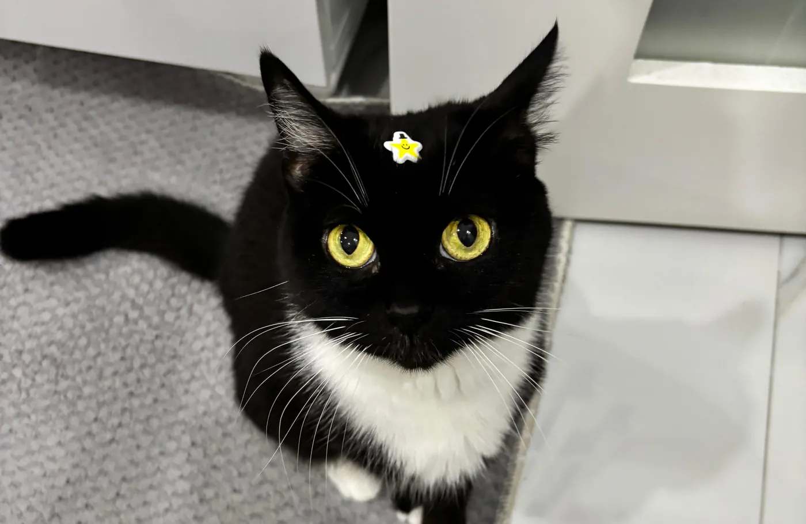
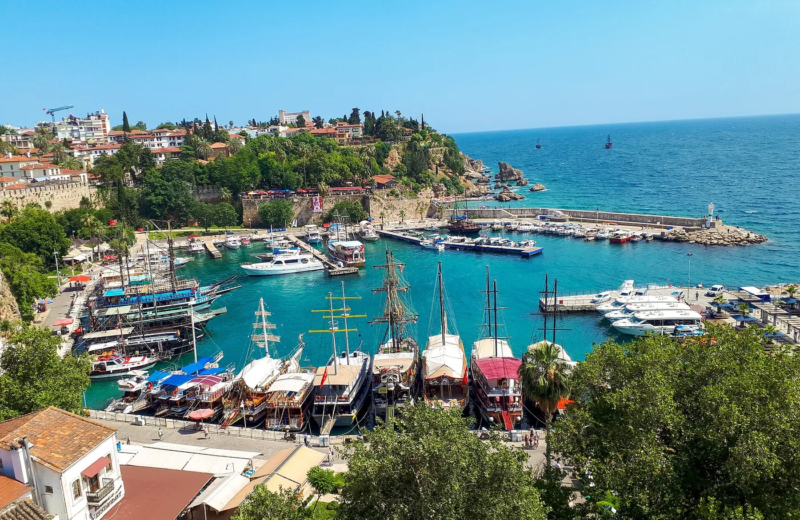
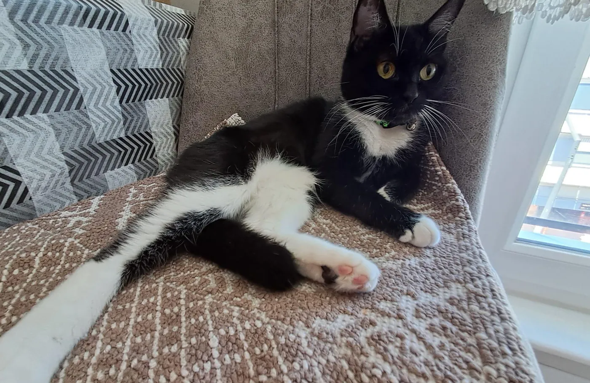
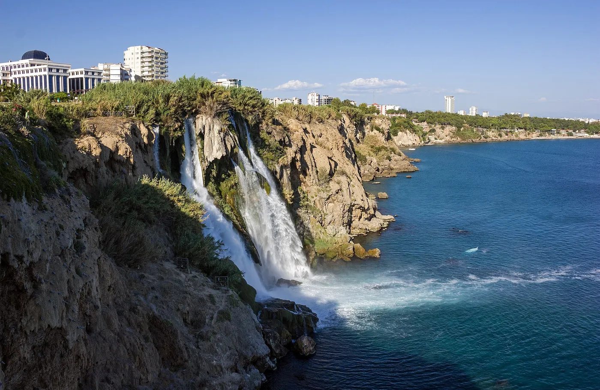
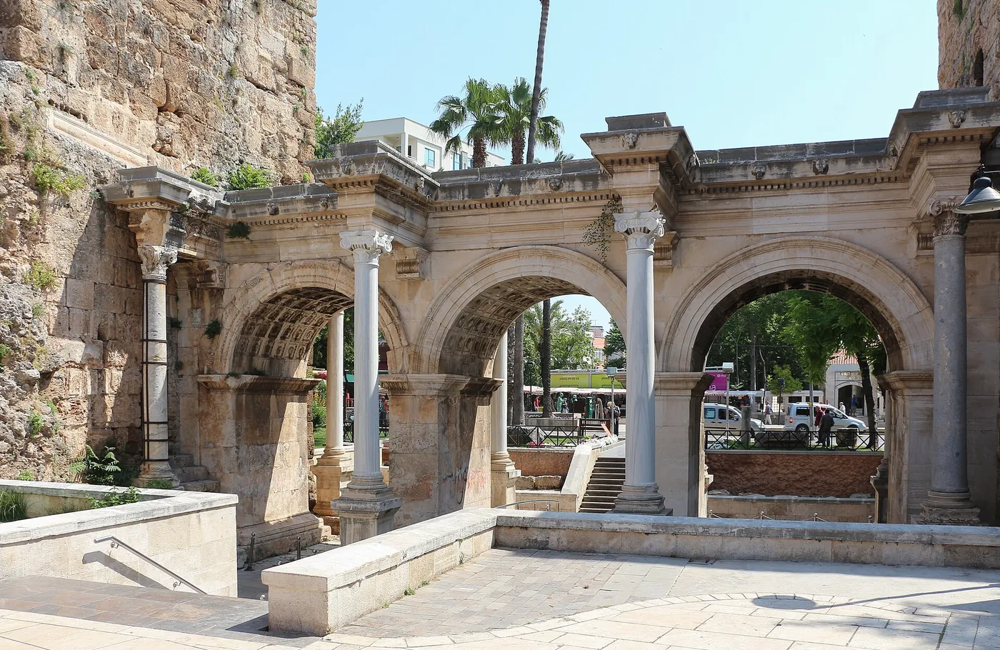
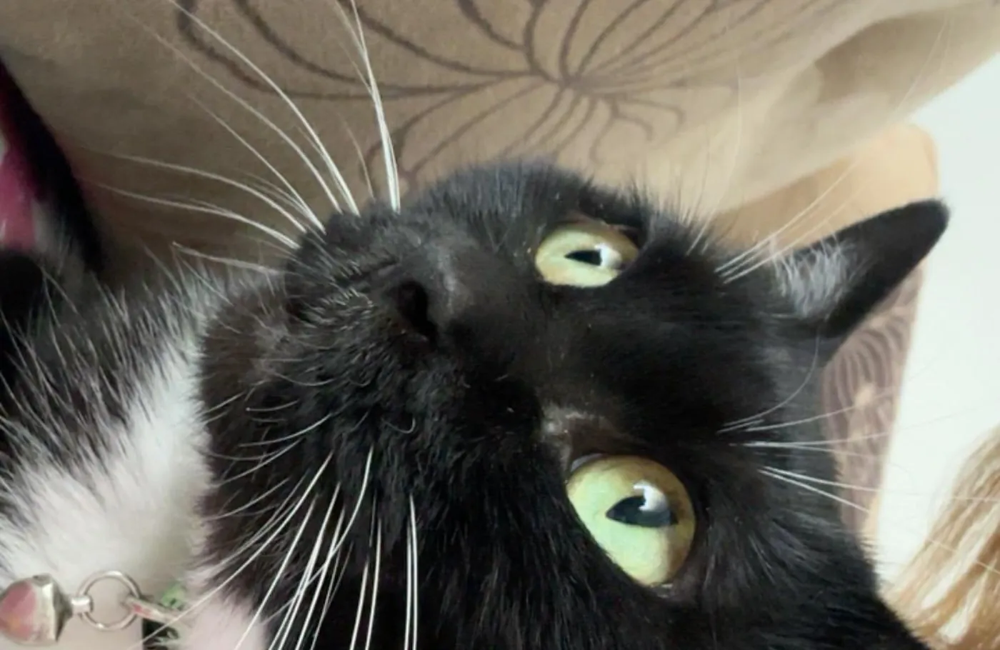

Me
A photo of me.
Frames of me, my cat Kömür and Antalya, the city I live in.
A photo of me.

My cat, who gave the desktop app its name and look.


Kömür resting on a chair.


Under the table, looking at the camera.

A landmark of Kaleiçi, with the Taurus Mountains behind.

Kömür getting very close to the camera.


Kömür's curious stare.

The coast road, the sea and the Beydağları mountains behind.

A waterfall in the greenery just outside the city.